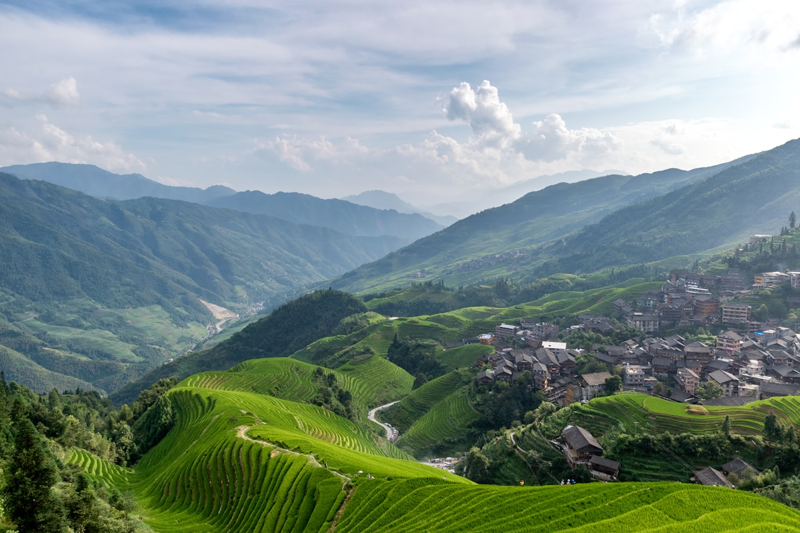

The Bund — A Walk Through Time

The Bund (外滩) is Shanghai's most iconic waterfront promenade, stretching 1.5 kilometers along the western bank of the Huangpu River. This magnificent row of 52 colonial-era buildings — in styles ranging from Neo-Classical to Art Deco — tells the story of Shanghai's transformation from a small fishing village to the "Paris of the East."
Walking along the Bund at night, with the Pudong skyline blazing across the river, is one of the most memorable experiences in all of Asia. The contrast between the historic buildings on the west bank and the futuristic towers on the east bank creates a visual metaphor for China itself — ancient heritage embracing boundless modernity.
🇯🇵 Shanghai & Japan
Shanghai has deep historical ties with Japan. In the 1920s–30s, thousands of Japanese lived in the Hongkou district, and the city was a major cultural exchange hub. Today, Shanghai is the Chinese city most visited by Japanese tourists, with direct flights from 15+ Japanese cities. Many Japanese find Shanghai's blend of East and West particularly captivating — it shares a cosmopolitan spirit with Tokyo.
Must-See on the Bund
- The Bund Sightseeing Tunnel: A psychedelic light show as you cross under the Huangpu River to Pudong
- HSBC Building (1923): Once called "the most luxurious building from the Suez Canal to the Bering Sea"
- Customs House: Famous for its clock tower, known as "Big Ching" — Shanghai's answer to Big Ben
- Peace Hotel: A legendary Art Deco hotel where Noel Coward wrote "Private Lives"
- Bund 18: A beautifully restored building now housing luxury brands and galleries
Lujiazui — China's Future in Steel and Glass

Directly across the river, Lujiazui (陆家嘴) is China's answer to Manhattan — a forest of supertall skyscrapers that has risen from farmland in just 30 years. This is the financial heart of mainland China, home to the world's second-tallest building and some of the most dramatic architecture on the planet.
The Three Super-Talls
Oriental Pearl Tower (468m)
Shanghai's most recognizable landmark with its distinctive pink spheres. The observation deck offers 360° city views. The revolving restaurant at 263m provides dinner with a view.
Shanghai World Financial Center (492m)
Nicknamed "The Bottle Opener" for its distinctive trapezoid aperture at the top. The 100th-floor observation deck provides vertigo-inducing glass-floor views.
Shanghai Tower (632m)
China's tallest building and the world's second-tallest. Its spiraling form twists 120° from base to top, reducing wind loads. The 118th-floor observation deck is the highest publicly accessible viewpoint in China.

Nearby Attractions
- Nanjing Road: China's premier shopping street, stretching 5.5 km from the Bund to Jing'an Temple
- Yu Garden: A classical Chinese garden dating to 1559, surrounded by traditional bazaars
- Xintiandi: Stylish dining and entertainment district in restored Shikumen (stone-gate) houses
- Tianzifang: A maze of narrow alleys filled with art studios, boutiques, and cafes
Practical Information
Best Time to Visit
- Night views: After 7 PM when the Pudong skyline is illuminated (lights off at 10 PM)
- Season: Spring (March–May) and autumn (September–November) for pleasant weather
Getting There
Take Subway Line 2 or 10 to Nanjing East Road station, then walk 10 minutes east to the Bund. For Lujiazui, take Line 2 to Lujiazui station.
Tips for Japanese Visitors
- The Bund is free to walk — no tickets needed
- Shanghai Tower observation deck: ¥180 (book online for discounts)
- Huangpu River night cruises depart from the Bund (¥120–150, 50 min)
- Japanese restaurants are plentiful in Shanghai — especially in Gubei and Hongqiao areas
- Alipay and WeChat Pay work for almost everything — set them up before your trip